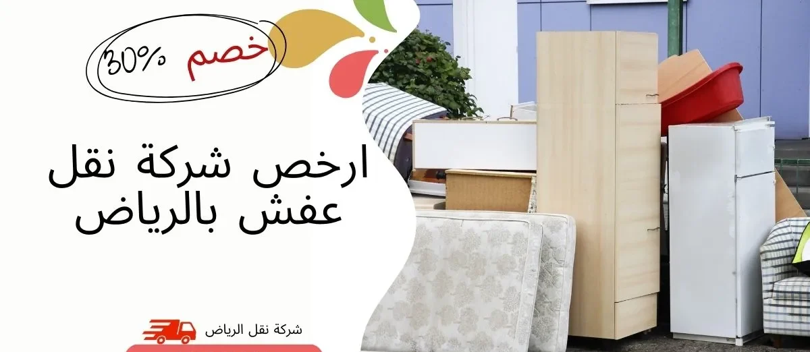

ارخص شركة نقل اثاث بالرياض 0541145506

إذا كنت تريد نقل أثاث منزلك وتوفير ميزانية نقل العفش دون خسارة جودة الخدمة، فإن ارخص شركة نقل عفش بالرياض هي شركة نقل الرياض الرسمية فهي تقدم لك الحل المثالي، حيث تتميز هذه الشركة بتوفير خدمات عالية الجودة وأسعار مناسبة تناسب الجميع، بالإضافة إلى أنك يمكنك الاستفادة من خدمات نقل آمنة وفعالة للعفش بمختلف أنواعه، وهذا بفضل فريق محترف من مختلف الجنسيات ومعدات حديثة، حيث تعمل الشركة على تسهيل عملية النقل وتلبية احتياجات العملاء بأقل التكاليف الممكنة ويمكنك التواصل مع الشركة عبر الواتساب بالضغط علي ايقونة الواتساب الموضحة علي الشاشة.
افضل شركة نقل عفش بالرياض
يبحث الكثير من الأشخاص عن شركة تجمع بين الجودة والاحترافية بأسعار مناسبة، حيث أن من أبرز هذه الشركات التي تتمتع بسمعة ممتازة في هذا المجال هي ارخص شركة نقل عفش بالرياض، حيث تقدم خدمات نقل عفش متميزة تشمل فك وتركيب الأثاث، تغليف الأثاث بشكل آمن، وتوفير شاحنات مجهزة خصيصًا لنقل الأثاث بحذر، كما أنها تضمن لك خدمة نقل العفش بأعلى درجات الأمان وبأسعار تنافسية، مما يجعلها الخيار الأمثل لأي شخص يبحث عن خدمات نقل موثوقة في الرياض، حيث يمكنك أن تتواصل معهم من خلال أرقام دينات لنقل العفش.
إذا كنت تنتقل إلى منزل أو مكتب جديد وتبحث عن ارخص شركة نقل اثاث بالرياض شركة موثوق بها ومضمونة توفر لك وقتك وتحافظ على اثاثك من التلف وتقدم لك جودة عالية وسرعة فى التنفيذ، فإن شركة نقل الرياض لنقل الاثاث بالرياض هى الاختيار الأمثل لك ولأسرتك، شركة نقل الرياض هي شركة متخصصة في فك ونقل وتركيب وتخزين الاثاث بمهنية عالية ولديها فريق مدرب يشمل فني كهرباء، فني إنترنت، متخصصين فى فك الأجهزة ببراعة وأمان، فى هذا المقال سنجيب لك عن أهم الاسئلة التى تخص السعر والجودة ونوضح خطوات نقل الأثاث مع ارخص شركة نقل اثاث بالرياض، كما سنناقش معايير اختيار الشركة المناسبة، يُمكنك التواصل مع شركة نقل الرياض من خلال الضغط على ايقونة الواتس اب.
ما الذي يميز ارخص شركة نقل اثاث بالرياض عن غيرها؟
- شركة نقل الرياض تقدم جودة عالية بأسعار تنافسية مقارنة بجودة خدماتها، كما أن أسعارها تناسب الجميع مما يجعلها ارخص شركة نقل اثاث بالرياض دون أن يؤثر ذلك على جودة الخدمة المقدمة إليك، أسعار الخدمة تشمل خدمات التغليف، والتحميل، والفك والتركيب والنقل.
- مصداقية وشفافية في التعامل بدون رسوم خفية، مما يضمن راحة العميل ووضوح الاتفاق، وذلك بتوفير عرض سعر مكتوب وواضح قبل البدء .
- توفر خدمة العملاء بشكل دائم على مدار اليوم للرد على استفساراتك وحل مشكلاتك.
- تغطية شاملة لجميع أحياء الرياض مع الالتزام بمواعيد الحضور والانتهاء من المهمة بكل دقة، مع مراعاة ظروف العميل وأوقات الراحة وعدم إزعاج الآخرين.
- ضمان على الاثاث ضد التلف خلال عملية النقل.
- فريق مدرب على أعلى مستوى، ويستخدم أدوات حديثة وأساليب آمنة لنقل الأثاث بجميع أنواعه، سواء كان أثاث منزل أو مكتب أو تجاري.
- خبرة طويلة فى مجال نقل الأثاث مما يضمن لك عملية نقل آمنة وخدمة عالية الجودة .
- تقدم شركة نقل الرياض خدمات شاملة، منها:
- فك وتركيب جميع أنواع الأثاث(دواليب، غرف نوم، مطابخ، مكاتب، مكتبات).
- تغليف مخصص للزجاج والأجهزة الحساسة باستخدام بلاستيك الفقاعات والكرتون المقوى.
- تخزين آمن للاثاث فى مخازن الشركة مؤقتًا في حال أردت تأخير موعد التسليم.
- تنظيف ما بعد النقل للتخلص من الحشرات والأتربة العالقة.
مع شركة نقل الرياض ارخص شركة نقل اثاث بالرياض لا تقلق بشأن أثاث منزلك، وذلك لما تتميز به الشركة من خدمات عالية الجودة، فنيين متخصصين، تواصل مع الشركة الآن بالضغط على ايقونة الواتس اب.
خدمات شاملة تقدمها شركات نقل الاثاث في الرياض بأسعار منافسة
قبل أن تختار شركة نقل اثاث لمنزلك يجب أن تتأكد من جودة الخدمات، ومصداقية الشركة في أسعارها،وهذا الذي تقدمه شركة نقل الرياض ارخص شركة نقل اثاث بالرياض، تقدم الشركة خدمات شاملة، تتمثل في:
- فريق متخصص فى فك وتركيب الأثاث بجميع أنواعه، تغليف يحمي اثاثك من الخدوش والكسور باستخدام افضل الخامات.
- أوناش هيدروليكية للوصول للأدوار العالية، خصوصًا فى حالة البنايات التي لا تحتوي على مصعد.
- تخزين عفش لمدة مؤقتة وطويلة الأمد فى مستودعات آمنة تابعة للشركة.
- تركيب وفك مكيفات وأجهزة كهربائية باستخدام فنيين متخصصين.
للحصول على كافة هذه الخدمات، تواصل مع شركة نقل الرياض بالضغط على ايقونة الواتس اب.
من هي أفضل شركة نقل اثاث بالرياض ؟
كيف تختار شركة نقل أثاث رخيصة وموثوقة في الرياض؟
اختيار شركة نقل اثاث بالرياض لا يعتمد فقط على السعر وإنما أيضا على مجموعة من المعايير :
- السمعة والتقييمات: تحقق من تقييمات العملاء السابقين على جوجل ومواقع التواصل الخاصة بالشركة.
- عدد سنوات الخبرة: الشركات ذات التاريخ الطويل عادة ما تكون أكثر احترافية، وأكثر أمانا فى نقل الاثاث مثل شركة نقل الرياض التي تمتلك خبرة طويلة في المجال.
- نوعية السيارات المستخدمة: يفضل اختيار شركة تمتلك أسطولًا حديثا لضمان وصول الأساس بأمان، مثل شركة نقل الرياض التي تمتلك أسطولًا حديثًا يضم سيارات بأحجام مختلفة لتلبية احتياجات جميع العملاء.
- اختر شركة توفر خدمة عملاء 24 ساعة مثل شركة نقل الرياض، وذلك للاجابة على جميع استفسارات عملائها.
نصائح مهمة قبل التعاقد مع شركة نقل اثاث في الرياض
تتطلب عملية النقل في مدينة كبيرة مثل مدينة الرياض تخطيطًا دقيقًا، الاستعانة بشركة موثوقة ، قبل التعاقد مع أي شركة من شركات نقل الأثاث إليك أهم النصائح:
- بعض الشركة تظهر في الإعلانات على أنها الأفضل ولكن في الحقيقة تكون غير ذلك، لذلك لا تثق في الإعلانات، ولكن يُمكنك الاستعانة بعملاء سابقين يخبروك عن مدى مصداقية الشركة.
- تأكد من أن الشركة التي تتعاقد معها تمتلك ترخيص رسمي مثل شركة نقل الرياض.
- اطلب من الشركة أن ترسل لك أحد ممثليها، لتحديد حجم السيارة التي تحتاجها، المدة التي تستغرقها العملية، لأنه على أساس ذلك يتم تحديد تكلفة عملية النقل.
- تأكد أن الشركة توفر لك ضمان على أساسك في حالة حدوث خدوش أو كسر.
- تأكد من أن العقد يتضمن تكلفة النقل، وقت تنفيذ العملية.
- التعاقد مع شركات تمتلك خدمة عملاء محترفة يجاوبون على استفساراتك يؤكد أن الشركة محترفة، مثل شركة نقل الرياض افضل و ارخص شركة نقل اثاث بالرياض.
هل الأسعار المنخفضة تعني خدمات أقل جودة؟
لا، مع شركة نقل الرياض ارخص شركة نقل اثاث بالرياض لا تدل الأسعار المنخفضة عن أقل جودة، تجمع شركة نقل الرياض بين السعر التنافسي والخدمة الاحترافية، حيث توفر الشركة تغليفًا عالي الجودة يضمن حماية أثاثك من الصدمات والخدوش، فنيين محترفين لديهم سرعة في الأداء مما يقلل من وقت عملية النقل، لدى شركة نقل الرياض أسطولا من السيارات الخاصة بها وذلك يقلل من تكلفة الخدمة ويعود بالنفع على العميل، إذا كنت تبحث عن شركة نقل بأسعار رخيصة وجودة عالية فإن شركة نقل الرياض هي الخيار الأمثل لك، يُمكنك التواصل مع شركة نقل الرياض من خلال الضغط على ايقونة الواتس اب.
لماذا تختار شركة نقل الرياض؟
- تعتبر شركة نقل الرياض ارخص شركة نقل اثاث بالرياض.
- تقدم الشركة خدمات عالية الجودة مما يضمن نقل أثاثك بأمان.
- الشركة لديها خدمة عملاء 24 ساعة للرد على جميع استفسارتكم في جميع الأوقات.
- فنيين محترفين لديهم خبرة عالية في فك وتركيب جميع أنواع الأثاث.
- خبرة طويلة في مجال نقل الأثاث مما يضمن لك عملية نقل آمنة تمامًا.
- تقييمات ممتازة من عملاء حقيقيين.
- سرعة الاستجابة والتنقل الفوري، الإلتزام بالمواعيد.
خطوات شركة نقل الأثاث في الرياض لنقل العفش بأمان
-
معاينة المكان لمعرفة حجم الأثاث، تحديد العدد المناسب من العمال، نوع التغليف المطلوب.
- تحديد الموعد المناسب للعميل، تقسيم العمل بين التغليف والفك والتحميل والتركيب.
- تغليف الاثاث باحترافية باستخدام خامات تغليف ذات جودة عالية.
- فك الأثاث باستخدام فنيين محترفين لمنع حدوث أي أخطاء.
- تحميل العفش بعناية داخل الشاحنات المبطنة الخاصة بشركة نقل الرياض، كما أن هذه السيارات مجهزة بأنظمة تثبيت للحفاظ على الأثاث.
- تفريغ الأثاث برفق وتركيبه في المكان الجديد، التأكد من رضا العميل.
لماذا تعتبر شركتنا من أرخص شركات نقل الأثاث بالرياض؟
تعتبر شركة نقل الرياض ارخص شركة نقل اثاث بالرياض، وذلك لأنها تتبع نظام تسعير مرن يناسب جميع العملاء، توفر خطط أسعار مختلفة حسب حجة الأثاث، عدد الأدوار، المسافة، يُمكن العميل اختيار الخدمة التي تناسبه سوء نقل فقط أو تغليف فقط أو نقل + تغليف.
كما أن شركة نقل الرياض أسعارها واضحة ولا تفرض أي رسوم مفاجئة بعد الاتفاق، تمتلك شركة نقل الرياض أسطول سيارات خاص بها مما يقلل من التكلفة التشغيلية، وتقليل التكلفة على العميل، كفاءة الفنيين في شركة نقل الرياض وسرعة أدائهم تقلل من وقت العملية مما يؤدي إلى خفض التكلفة، كما أن الشركة تقدم خصومات للعملاء المميزين، خصومات موسمية، لذلك لا تتردد في التواصل مع شركة نقل الرياض واضغط على ايقونة الواتس اب.
مقارنة بين أسعار شركات نقل الأثاث في الرياض
تختلف أسعار شركات نقل الأثاث بالرياض باختلاف عدة عوامل، منها حجم الأثاث، عدد القطع، مسافة النقل، وعدد الأدوار، كما تختلف الأسعار بإختلاف جودة الخدمة المقدمة، هناك شركات تقدم خدمات تحميل ونقل الأثاث فقط، هناك شركات أخرى توفر خدمات متكاملة تشمل فك وتركيب وتغليف الأثاث بشكل احترافي مما يؤثر على تكلفة عملية النقل، إذا كنت تبحث عن ارخص شركة نقل اثاث بالرياض وتقدم خدمات شاملة بجودة عالية فإن شركة نقل الرياض هي الخيار الأمثل لك، للتواصل مع الشركة اضغط على ايقونة الواتس اب واحصل على خدمات شاملة وجودة عالية تضمن نقل أثاثك بأمان.
تقييمات العملاء لأرخص شركات نقل العفش بالرياض
تقييمات العملاء لارخص شركة نقل اثاث بالرياض تُعد مؤشرًا ضروريًا يوضح مدى مصداقية وكفاءة الشركة، لذلك يجب عليك قراءة تقييمات الشركة أولًا قبل طلب الخدمة منها، تمتلك شركة نقل الرياض تقييمات عالية من عملاء سابقين لها مما يضمن جودة خدماتها، مصداقيتها، يُمكنك التواصل معها بالضغط على ايقونة الواتس اب.
خدمات إضافية تقدمها شركات نقل الأثاث بأسعار رمزية
- خدمة فك وتركيب الأثاث بواسطة فنيين مدربين.
- تغليف الأثاث بإستخدام مواد إضافية.
- تنظيف المكان بعد عملية النقل.
- التخزين المؤقت للأثاث في مستودعات آمنة.
- ترتيب الأثاث في الموقع الجديد.
شركة نقل الرياض ليست فقط ارخص شركة نقل اثاث بالرياض ، بل هى أيضا من أكثر الشركات التزامًا بالمواعيد لديها سرعة في الاستجابة بالإضافة إلى جودة خدماتها، وبمراجعة تقييمات العملاء ستجدها حاصلة على تقييمات عالية من العملاء السابقين. إذا كنت تبحث عن شركة توفر لك الجهد والوقت والمال و تمتاز بالمصداقية والأمانة، فشركة نقل الرياض هي الخيار الأفضل والمناسب لك داخل أحياء الرياض. للتواصل مع ارخص شركة نقل اثاث بالرياض اضغط على ايقونة الواتس اب واحصل على السعر المناسب لك.
الأسئلة الشائعة حول ارخص شركة نقل اثاث بالرياض
ما هي الخدمات التي تقدمها ارخص شركات نقل العفش بالرياض؟
تشمل خدمات ارخص شركة نقل عفش بالرياض: فك وتركيب الاثاث، تغليف القطع الحساسة بمواد لحمايتها، تحميل ونقل وتفريغ الأثاث، ترتيب الأثاث في الموقع الجديد.
كم من الوقت تستغرق عملية نقل الأثاث؟
تختلف مدة عملية نقل الأثاث على عدة عوامل منها حجم الأثاث، عدد القطع، المسافة بين الموقع القديم والجديد.
نقل عفش شرق الرياض
تعتبر خدمة نقل عفش شرق الرياض يتطلب اختيار ارخص شركة نقل عفش بالرياض وتقدم خدمات متكاملة لضمان سلامة الأثاث أثناء النقل، فـ هناك العديد من الشركات المتخصصة في هذه المنطقة التي توفر خدمات عالية الجودة تتناسب مع احتياجات العملاء، سواء كانت عملية نقل للأثاث المنزلي أو المكتبي.
تتمتع هذه الشركات بخبرة واسعة في التعامل مع أنواع مختلفة من الأثاث، حيث تستخدم مواد تغليف متطورة مثل الفوم وورق الفقاعة لحماية القطع أثناء النقل، كما تقدم خدمات الفك والتركيب للأثاث، مما يجعل العملية أكثر سهولة وأقل وقتًا، بالإضافة إلى ذلك توفر هذه الشركات سيارات نصف نقل لنقل العفش بالرياض مجهزة خصيصًا لضمان سلامة الأثاث أثناء الرحلة وتلتزم بالمواعيد المتفق عليها، أسعار النقل في شرق الرياض تتفاوت حسب حجم الأثاث والمسافة، ولكن الشركات المتخصصة تقدم خيارات مرنة لتلبية جميع الاحتياجات بأسعار تنافسية.
الأسئلة الشائعة حول شركة نقل عفش بالرياض
هل يمكنني الحصول على خصومات إضافية عند النقل لمسافات طويلة؟
نعم يوجد العديد من شركات نقل العفش تقدم خصومات إضافية عند النقل لمسافات طويلة، لتشجيع العملاء على اختيار خدماتهم مثل ارخص شركة نقل عفش بالرياض، كما يمكن أن تشمل هذه الخصومات تخفيضات على تكلفة النقل، أو عروض على خدمات إضافية مثل التغليف أو التخزين المؤقت للأثاث، ننصح بالتواصل مع الشركة مسبقًا للاستفسار عن تفاصيل العروض والخصومات المتاحة، حيث يمكن للشركات تقديم عروض مخصصة بناءً على حجم الأثاث والمسافة المقطوعة.
ما هي المدة المتوقعة لإتمام عملية نقل العفش داخل الرياض؟
تختلف المدة المتوقعة لإتمام عملية نقل العفش داخل الرياض بناءً على عدة عوامل، مثل حجم الأثاث الذي تريد نقله، وعدد الطوابق، والمسافة بين الموقعين، ومدى جاهزية الأثاث للتغليف والنقل بشكل عام، يمكن أن تستغرق عملية النقل من 3 إلى 6 ساعات في المتوسط، أما إذا كان النقل يتطلب فك وتركيب الأثاث أو تغليفًا خاصًا فقد تزيد المدة قليلاً، ننصح دائمًا بالتواصل مع الشركة للحصول على تقدير دقيق للمدة بناءً على احتياجات النقل الخاصة بك.
كيف يمكنني التأكد من سلامة الأثاث خلال عملية النقل؟
قم باختيار شركة نقل موثوقة ومتخصصة لضمان سلامة الأثاث خلال النقل، تأكد من تغليف الأثاث باستخدام مواد حماية عالية الجودة مثل ورق الفقاعة والفوم، كما يفضل التأكد من توفر تأمين على الأثاث أثناء النقل للحصول على تعويض في حال حدوث أي ضرر، يمكنك أيضًا متابعة سير عملية النقل للتأكد من تنفيذ جميع إجراءات الأمان بشكل صحيح.
في الختام يعد اختيار ارخص شركة نقل عفش بالرياض، يتيح لك فرصة الحصول على نقل موثوق وذات جودة عالية دون تكبد تكاليف زائدة، حيث أن هذه الشركة تضمن لك وصول العفش إلى وجهتك بسلامة تامة، مع توفير خدمات إضافية مثل فك وتركيب الأثاث، وتغليفه لحمايته من الأضرار، بفضل التزامها بالمواعيد وتوفير عروض تناسب العملاء، تعد هذه الشركة خيارك المثالي للنقل بأسعار اقتصادية، سواء كنت بحاجة لنقل أثاث منزلي أو مكتبي ستجد في خدماتهم الراحة والكفاءة التي تبحث عنها.